Dasharo Workstation installation manual
Introduction
Dasharo Workstation is a firmware product designed for Dell OptiPlex 7010 and 9010
To install the Dasharo Workstation, you will need the Dell OptiPlex 7010 or 9010 machines and a Linux installed on it (in UEFI mode since Dasharo Workstation v0.2 supports UEFI mode booting only).
TBD: picture of whole workstation hardware, as it would be shown in shop
Preparation
To install Dasharo Workstation, one has to conduct a few preparation steps. Follow the below instructions:
-
Open the case by lifting the handle on the case up.
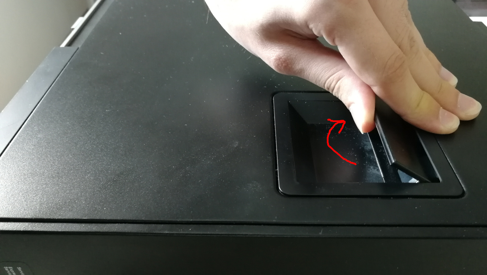
-
Lift the whole top cover and take it off.
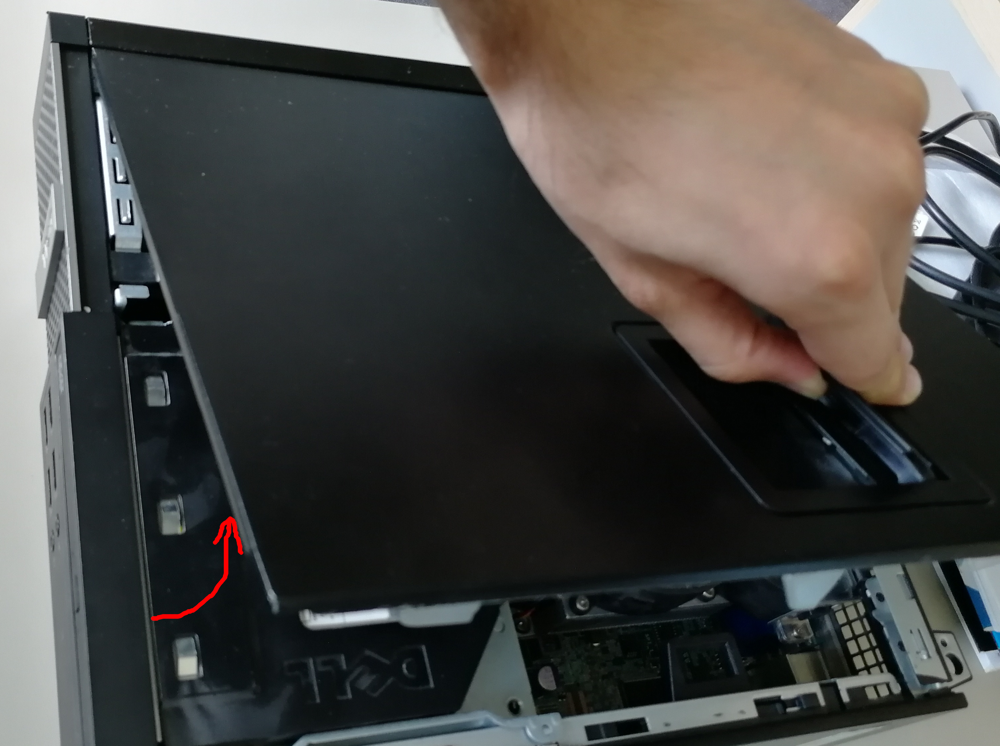
-
Now, it is time to release the disk dock. Lift up the handle of the CD/DVD drive bay.
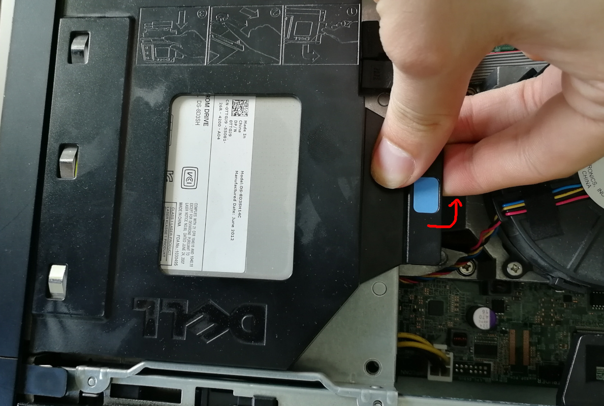
-
Pull the CD/DVD drive bay to the CPU fan side.
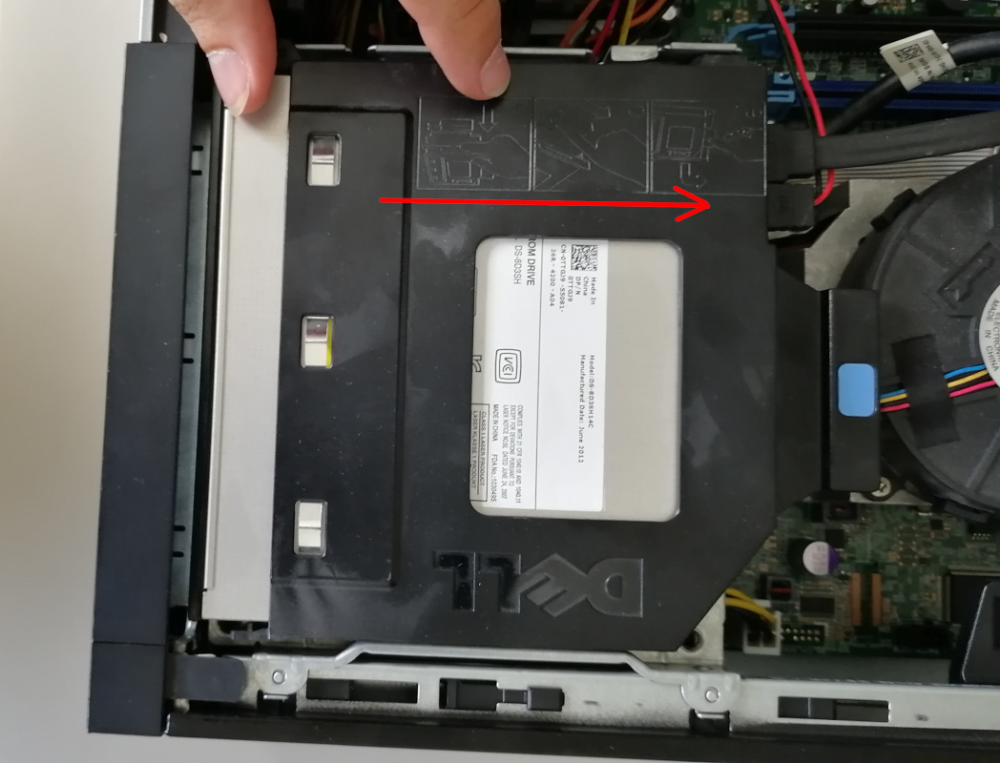
-
Move the blue disk dock handle to the CPU fan side.
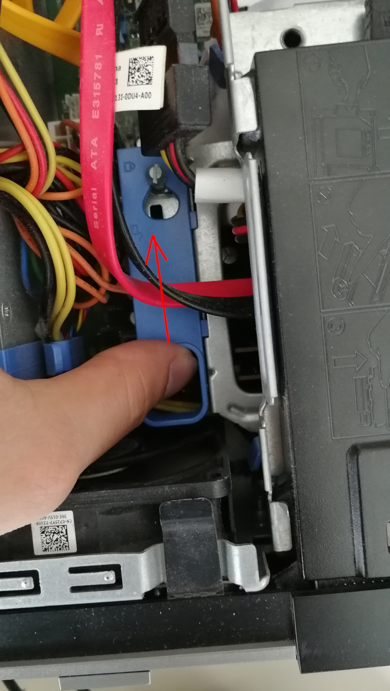
-
The screw should be at the more giant hole now. Lift up the whole dock to remove it.
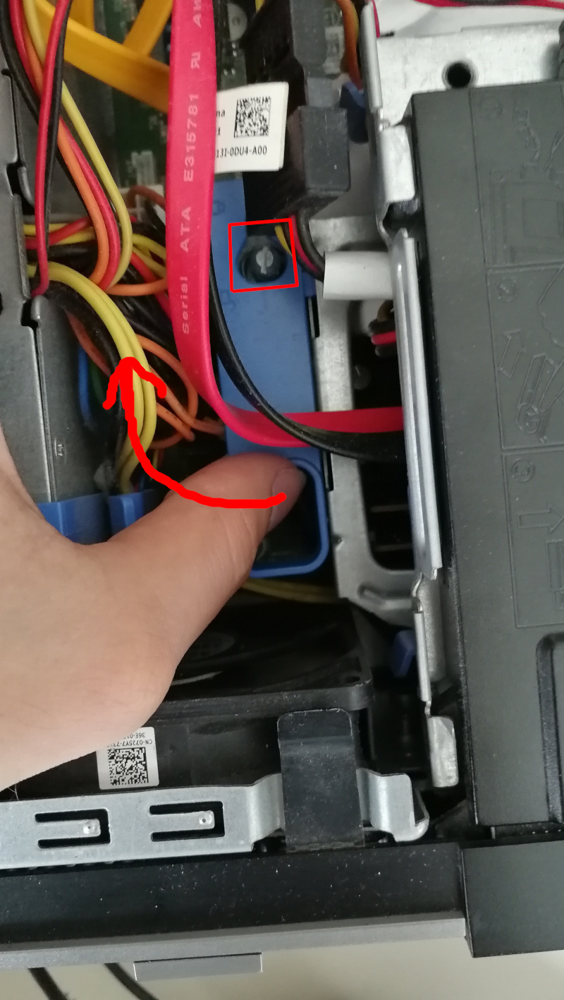
-
When the dock is removed, the service mode jumper should be visible.
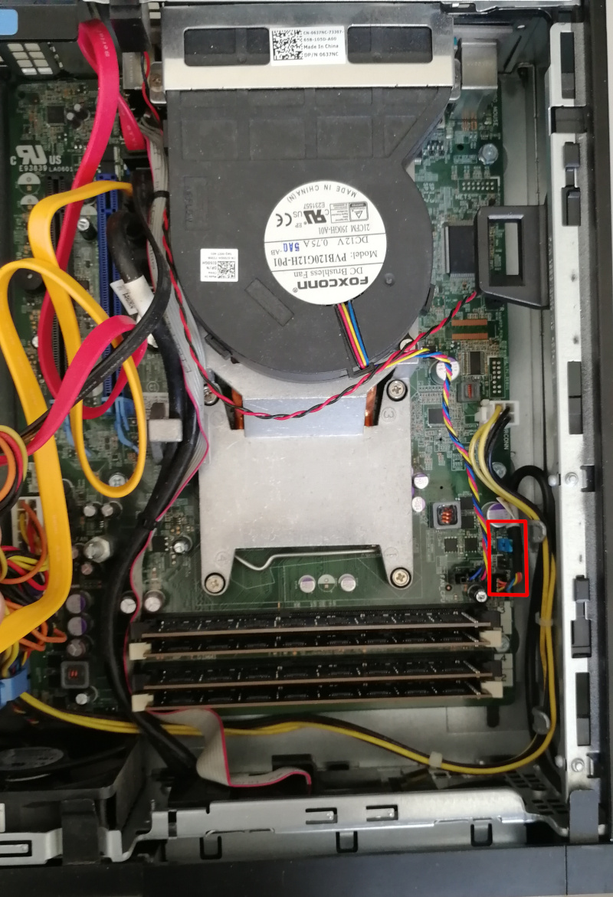
-
Place the jumper in the place marked by the red rectangle.
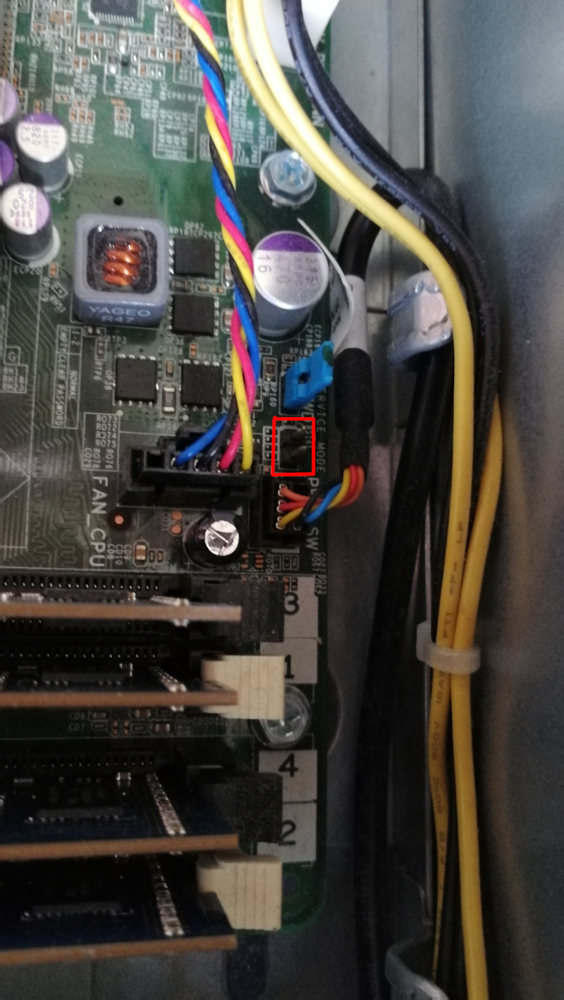
-
It should look like this.
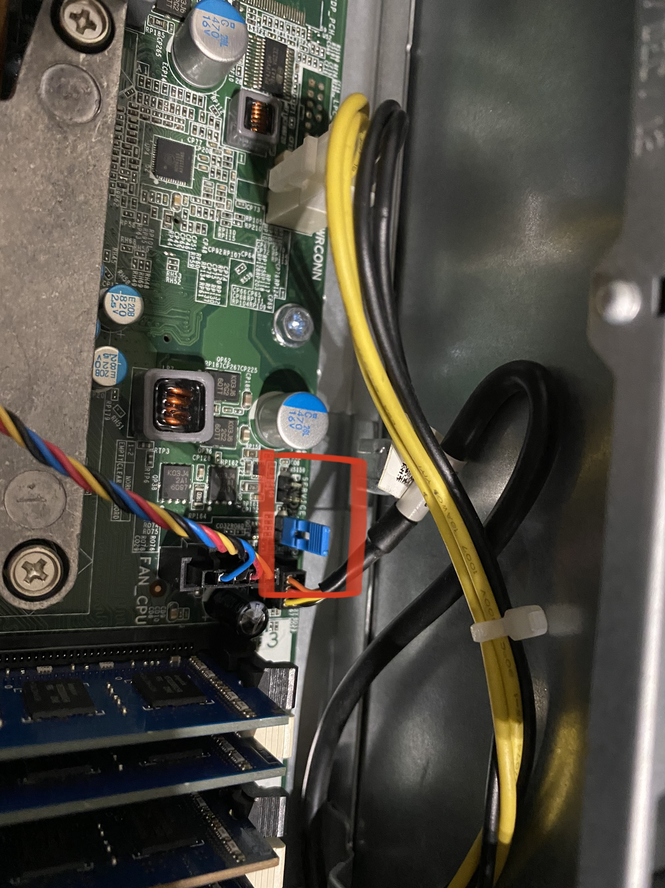
-
Power on the machine. You should see a warning that the service jumper is active. Press F1 to proceed and boot to your Linux system.
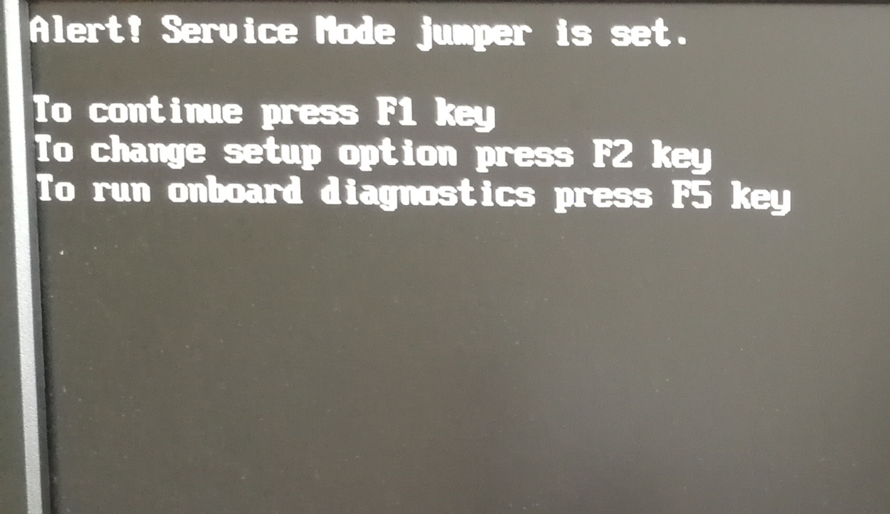
Installation
You will need root privileges from now on to proceed. So switch to the root user or use sudo in each command.
- Install flashrom v1.1 or newer with your distribution's package manager if you don't have it installed yet. If your distro doesn't provide flashrom or provides an outdated one, you can build it yourself using this instruction.
- Back your firmware image up with:
sudo flashrom -p internal -r bios_backup.bin(be sure flashrom doesn't report any errors like below). - Download the Dasharo Workstation firmware image
- Flash it on you Dell OptiPlex machine:
sudo flashrom -p internal --ifd -i bios -i me -w <path_to_the_binary_file>
for example:
$ sudo flashrom -p internal --ifd -i bios -i me -w /tmp/dasharo_workstation_v0.2_rc3.rom
flashrom v1.1-rc1-127-g370a9f3 on Linux 4.19.0-9-amd64 (x86_64)
flashrom is free software, get the source code at https://flashrom.org
Using clock_gettime for delay loops (clk_id: 1, resolution: 1ns).
Found chipset "Intel Q77".
This chipset is marked as untested. If you are using an up-to-date version
of flashrom *and* were (not) able to successfully update your firmware with
it, then please email a report to flashrom@flashrom.org including a verbose
(-V) log.
Thank you!
Enabling flash write... SPI Configuration is locked down.
The Flash Descriptor Override Strap-Pin is set. Restrictions implied by
the Master Section of the flash descriptor are NOT in effect. Please note
that Protected Range (PR) restrictions still apply.
Enabling hardware sequencing due to multiple flash chips detected.
OK.
Found Programmer flash chip "Opaque flash chip" (12288 kB,
Programmer-specific) mapped at physical address 0x0000000000000000.
Reading old flash chip contents... done.
Erasing and writing flash chip... Erase/write done.
Verifying flash... VERIFIED.
If you get a warning:
WARNING! You may be running flashrom on an unsupported laptop.
And programmer initialization failed, run command:
flashrom -p internal:laptop=this_is_not_a_laptop -w /tmp/dasharo_workstation_v0.2_rc3.rom --ifd -i bios -i me
If you have placed the jumper correctly, you should see the following message in flashrom's output:
The Flash Descriptor Override Strap-Pin is set. Restrictions implied by the Master Section of the flash descriptor are NOT in effect. Please note
that Protected Range (PR) restrictions still apply.
A newer version of flashrom may not display the warning about unsupported chipset as it already may be marked as tested. Our team has verified that the flashrom updates firmware reliably on this chipset.
Verification
- If everything went well (flashrom has verified the flash content),
- Shut down machine, move the jumper to the original place
- Power on the machine.
- After rebooting, you should see the Dasharo Workstation logo when booting. When the logo appears, you may press ESC to select the boot device if you want to reboot from another source.
Troubleshooting
If you do not see the logo after few seconds, something probably went wrong, or a bug was hit. If the LED on the power button shines white, that means the platform booted correctly.
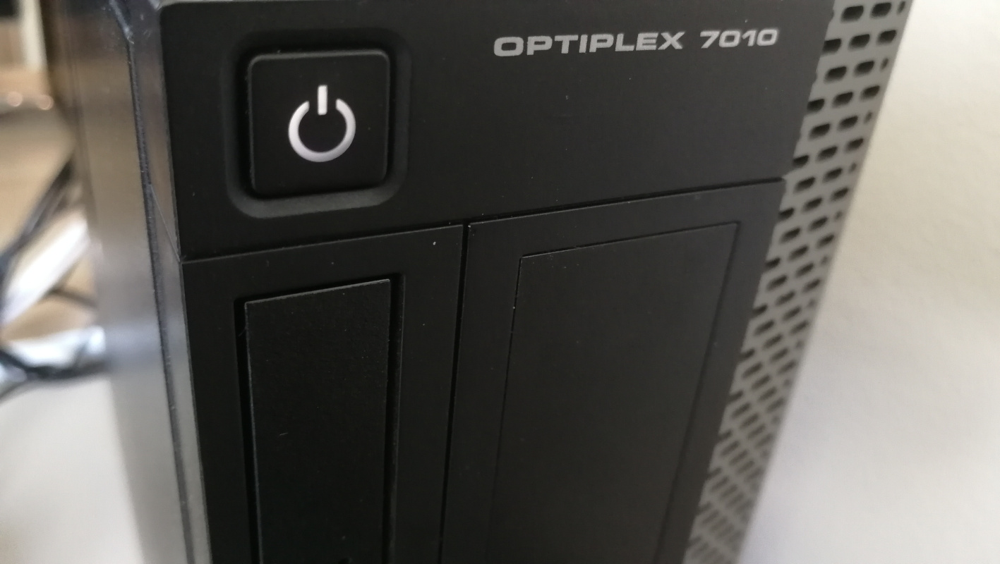
If the power button LED constantly shines in orange color, that means you have hit an error. The LED will start blinking soon.
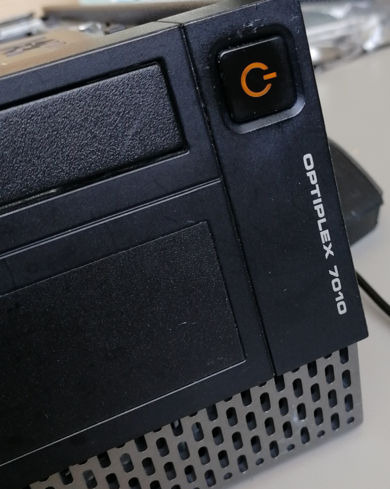
If you see the logo and after that system does not starts (black screen), please take the following steps:
- Put a bootable USB stick to the USB port.
- Restart the computer using the power button.
- Press the ESC key to enter a boot menu.
- Choose a USB drive from the list.
- Re-install the operating system.
If you see a flashrom error like this:
ERROR: Could not get I/O privileges (Operation not permitted).
You need to be root.
Error: Programmer initialization failed.
Use sudo with the flashrom command. If the problem persists, probably the
kernel restricts access to IOMEM. To work around it, append
iomem=relaxed to the kernel command line. You may do it in following ways:
-
Edit
grub.cfgin/boot/grub/:And reboot. Then try flashing again.Linux /boot/vmlinuz-4.15.0-115-generic ro quiet iomem=relaxed` -
Edit
/etc/default/grub:And regenerate grub config file withGRUB_CMDLINE_LINUX="iomem=relaxed"`sudo update-grub2orsudo grub-mkconfig -o /boot/grub/grub.cfg. Reboot and then try flashing again. -
If your computer uses BIOS for booting, then hold down the Shift, or if your computer uses UEFI for booting, press Esc several times, while GRUB is loading to get the boot menu. And, after getting a GRUB menu, press E on a boot entry to append
iomem=relaxedto kernel command line and press Ctrl+X or F10 to boot. Although this setting is temporary and will last only during the next boot, this way is faster and a customer doesn't need to re-generate anything.
Please note having it as a temporary setting maybe is slightly better for security (there's a reason why it's disabled by default).
If the above does not resolve the problem, the kernel may be compiled with strict devmem, which prohibits accessing the IOMEM. You should then take different Linux system.
TBD: add refrence to Dasharo Reference OS on USB stick or other method
Ubuntu installation
Ubuntu legacy installers have problems with graphical setup mode. When you see an error:
graphics initialization failed
Error setting up gfxboot
boot:_
You need a workaround to proceed with the installation. To boot the installer, simply
type live-install and press ENTER. It will boot to Ubuntu Live, and the
installer will be automatically launched.
Version affected: Dasharo Workstation v0.1.
If you see blinking yellow LED and black screen after reboot: 1. Unplug the power supply cable 2. Wait for 30s 3. Plug power supply again (machine should start automatically)
Bug reporting
If you encountered an error or bug, please fill report in Dasharo Issues repo.